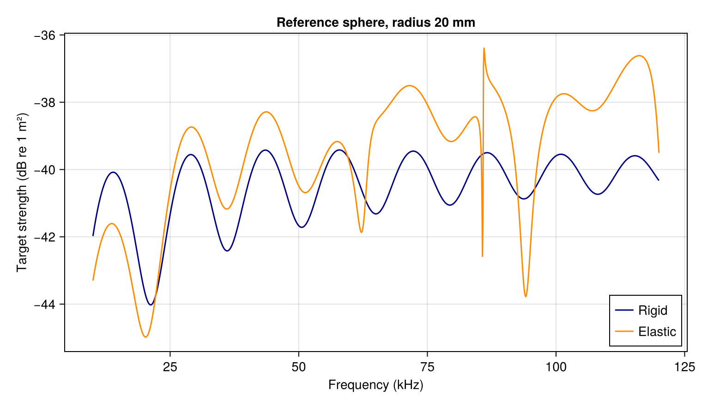

Comparing reference-target models
How much does treating a reference sphere as rigid change its predicted echo? Compare rigid and elastic models at the same radius before choosing a calibration model. These material contrasts are illustrative, so be sure to use measured material properties and the exterior sound speed for a particular target.
Compare the spectra
using AcousticScattering
using CairoMakie: Figure, Axis, lines!, axislegend, save
body = Sphere(0.02)
sound_speed = 1500.0
frequencies = range(10000.0, 120000.0; length=1101)
rigid = frequency_sweep(k -> modal(body, Rigid(), k), frequencies, sound_speed)
elastic = frequency_sweep(k -> modal(body, SolidElastic(7.8, 4.0, 2.0), k),
frequencies, sound_speed)
figure = Figure(; size=(760, 440))
axis = Axis(figure[1, 1]; xlabel="Frequency (kHz)",
ylabel="Target strength (dB re 1 m²)", title="Reference sphere, radius 20 mm")
lines!(axis, frequencies ./ 1000, rigid.target_strength; label="Rigid", color=:navy)
lines!(axis, frequencies ./ 1000, elastic.target_strength; label="Elastic", color=:darkorange)
axislegend(axis; position=:rb)
save("reference_targets.png", figure)
The elastic inputs are density, longitudinal-speed and shear-speed ratios relative to the exterior fluid. Peaks and dips reflect the model's frequency response. A rigid calculation alone cannot establish an elastic target's calibration value.
Check a working frequency
k = 2pi * 38000 / sound_speed
material = SolidElastic(7.8, 4.0, 2.0)
a = scattering_amplitude(modal(body, material, k; m_max=24))
b = scattering_amplitude(modal(body, material, k; m_max=36))
@assert isapprox(a, b; rtol=1e-8)
(target_strength_db=target_strength(b), modal_change=abs(a-b)/abs(b))(target_strength_db = -40.568214276450874, modal_change = 0.0)Refine the frequency samples around any feature relevant to the instrument's band. This modal-order check measures numerical truncation, separately from material and radius uncertainty. See Materials and shells for other interiors.